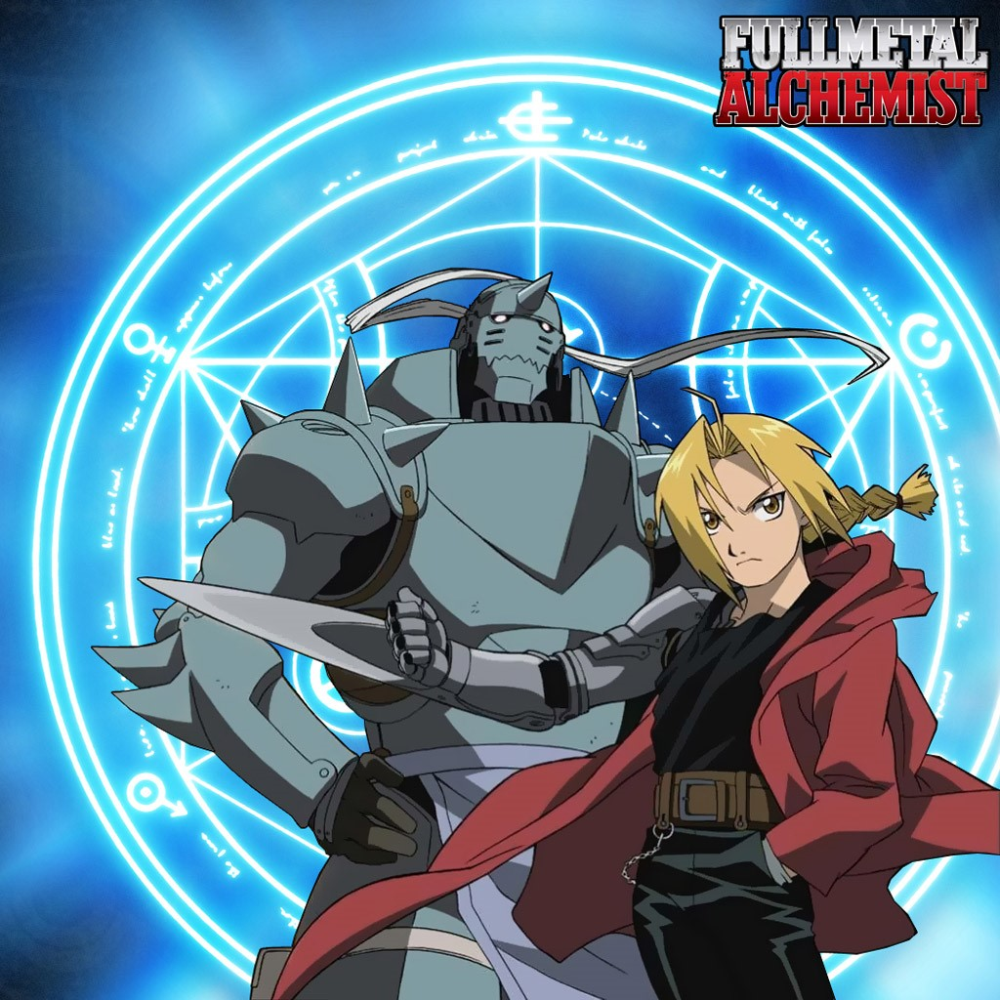
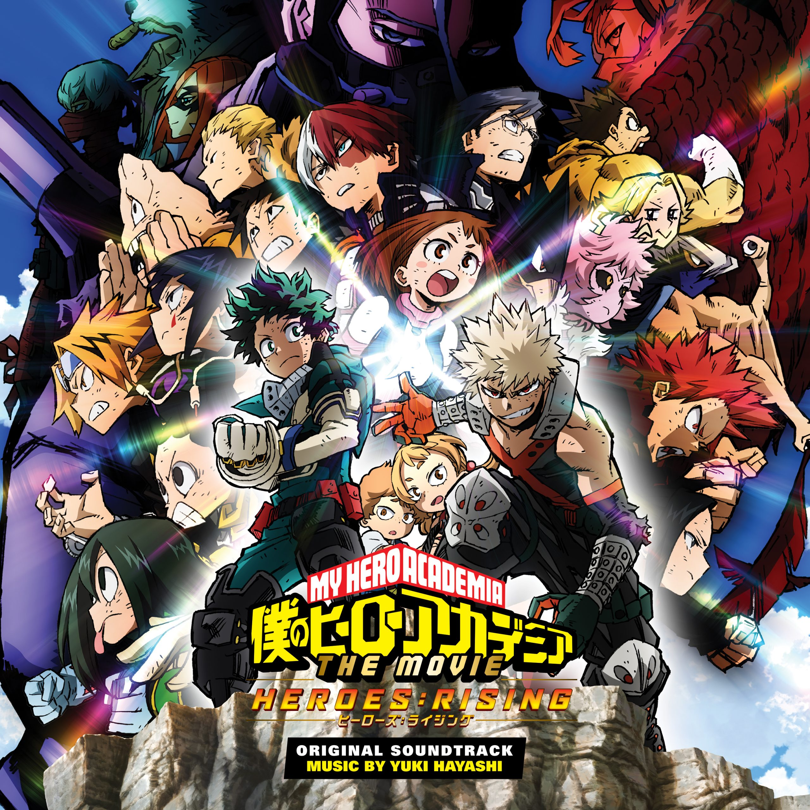
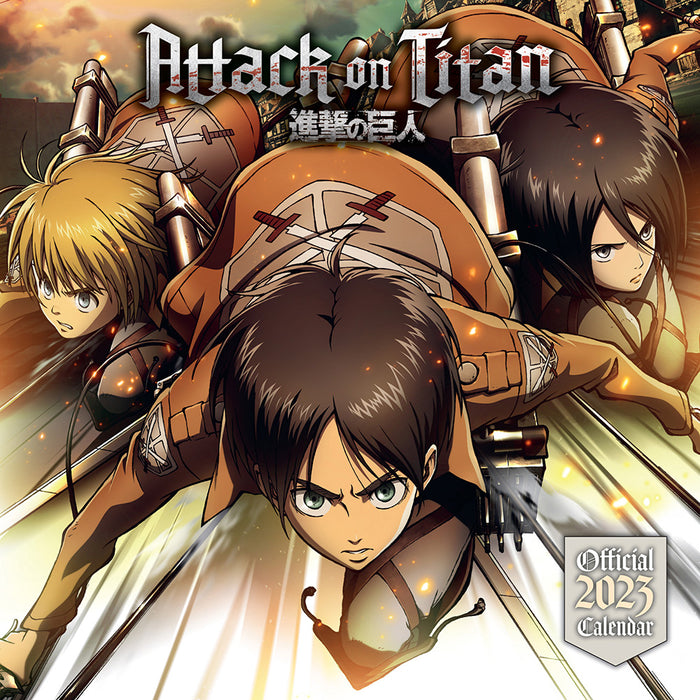
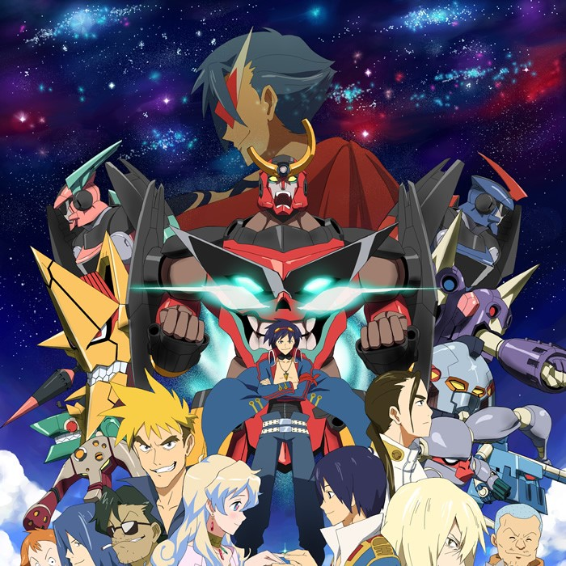
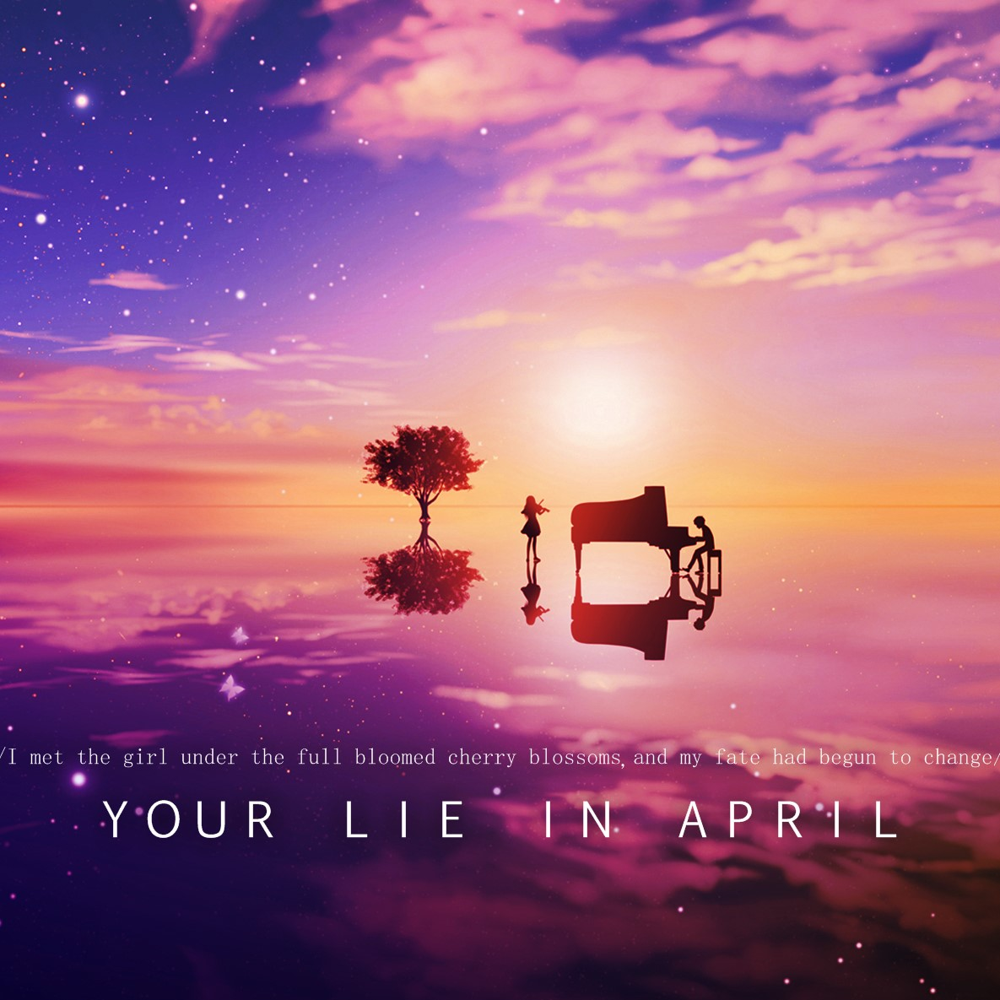
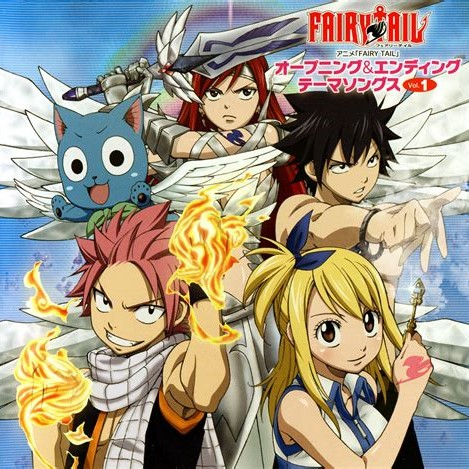

ANIME
|  | ||
 |
 |  |
|  |  |  |
Hello! My name is Joshua Yu. I was born in Albuquerque in 2001, and grew up in the Northeast Heights area. I was homeschooled from kindergarten through high-school, and I attended Rio Grande Enrichment Studies as a part of my high-school experience. During high-school, I worked as an independent "landscaper" for friends and family, mostly consisting of basic yard work/cleanup. I also attended CNM as a dual credit student, and got about halfway through to an associates degree in communications. After graduating high-school, I worked at Dion's for 4 years, working my way up to becoming the Assistant Catering Manager.
I have many interests, but the ones I want to tell you about are my love for music, DND, and anime. My love for music started when I first learned the piano and violin at a young age. My love for DND started about 4 years ago, as it became a new way I could spend time with friends on a cooperative project. And my love for anime has been around since I was 5, and it has grown in the last few years as I have watched more and more.
This is my playlist that I'm constantly editing, adding songs I like and removing others to create the perfect mood for me. It's made up of all sorts of genres, and never fails to reset my mood to get me out of any funk.
My favorite instrumental artist is Samuel Kim. He takes certain soundtracks from film, TV, anime, and games amd turns them into Epic/Cinematic Arrangements.
My favorite song has always changed over the years, but currently it is this song.
DND is one of my more recent enjoyments, as I only started getting into it about 4 years ago. I enjoy it because it's a cooperative story. I enjoy being the one who creates the outline of the story because it gives me a chance to see what people would do in different situations. I also enjoy playing, and have played multiple one-shots as different characters. It provides a lot of variety in character choice, and it is an outlet of creation for me and my group. Creating characters, stories, and worlds is a very fun past-time, and plus, hearing the dice click together when rolling them is a very euphoric sound.